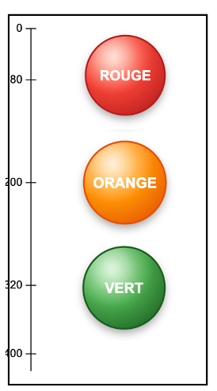
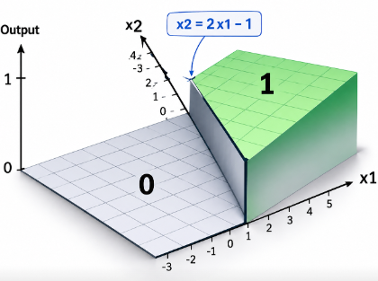

2 — Le réseau : composer des transformations simples
Combiner des neurones
Tout neurone coupe l'espace en deux parties avec une frontière linéaire qui sépare sa zone d'activation de sa zone d'inhibition.
Supposons que le système veuille cibler une région circulaire qui identifie une catégorie donnée. On peut approximer sa géométrie par une série de 12 droites issues de 12 neurones.

Une couche cachée porte cette préparation et la couche de sortie effectue ensuite un ET logique de ces sorties.

Si un point (x1,x2) satisfait à toutes les zones actives des 12 neurones, il tombe dans cette catégorie.
Expérimenter par un exemple
Pilotage des feux tricolores avec une tablette tactile
Soit une tablette tactile de 200 x 400 pixels sur laquelle on présente des zones à cliquer pour allumer les feux.

Comportement attendu
Un doigt sur la tablette va pointer une coordonnée (x,y) et de sa position dépendra une action.
| Le clic (x,y) a lieu | Action | Sortie |
|---|---|---|
| dans le cercle Rouge |

|
[0,0,1] |
| dans le cercle Orange |

|
[0,1,0] |
| dans le cercle Vert |

|
[1,0,0] |
| Ailleurs |

|
[0,0,0] |
La nouvelle problématique
Au lieu des 4 cas x1,x2 du chapitre 1 avec deux
interrupteurs, on a ici 200x400 = 80 000 cas possibles.
Il
n'est plus possible de traiter tous les cas: Il faut que le réseau apprenne seul
sur des échantillons suffisants.
Un apprentissage en volume impossible avec le perceptron H
Pour apprendre, un algorithme cherche à réduire l'erreur,
c'est-à-dire la distance entre la prédiction (le score de
sortie) et la valeur attendue, pour chacun des points des
données d'entraînement.
Avec le perceptron, entre la zone «
oui » et la zone « non », il y a un front vertical.

En termes mathématiques, la fonction est non dérivable : sa pente est nulle partout et indéfinie au point de bascule. Le gradient (c'est-à-dire la valeur de la pente), ne donne aucune indication sur la distance et la direction à suivre pour réduire l'erreur.
Cette incapacité à apprendre sur de grands volumes a bloqué les développements et provoqué l'hiver de l'IA.
Du perceptron d'origine, seul le nom a survécu : on parle de MLP, Multi Layer Perceptron alors que la fonction d'activation a évolué.
Passage à la non linéarité
La fonction d'activation Sigmoïde